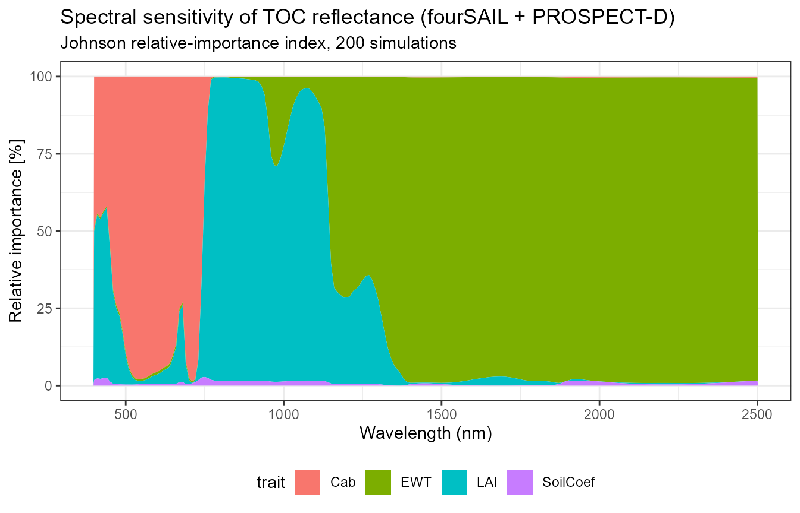
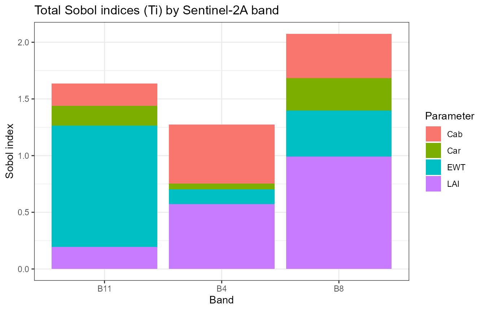
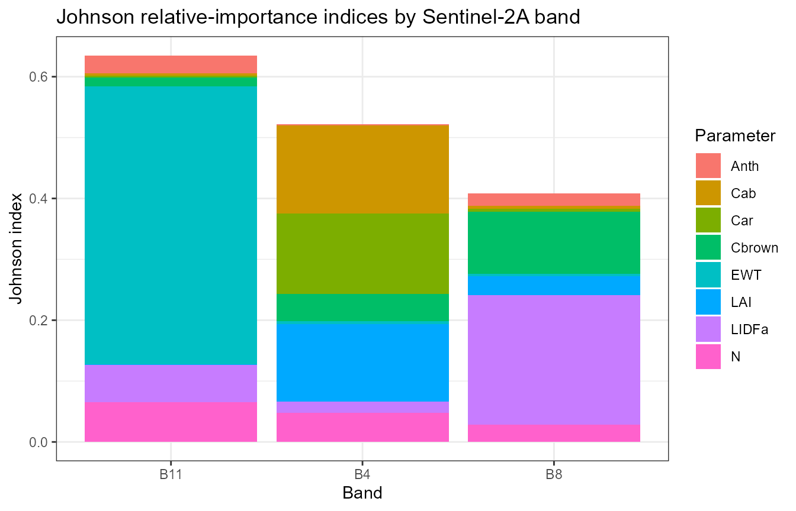

10. Understanding RTM Sensitivity
t10-sensitivity.RmdTutorial 02 already swept one trait at a time (Cab, EWT, LAI) and watched the spectrum respond – one-at-a-time (OAT), the simplest and most intuitive sensitivity method. This page goes further: global sensitivity analysis, where every trait varies simultaneously (capturing interactions OAT can’t), using three different methods that – when they agree – give real confidence the result reflects the physics, not one method’s quirks.
| Method | Function | Scope |
|---|---|---|
| One-at-a-time (OAT) | plain sweep (Tutorial 02) | Sweep one trait, hold others fixed |
| Johnson relative importance, per wavelength | get.spectral.sensitivity() |
Global, full spectrum |
| Sobol Si/Ti, per band |
sensobol::sobol_matrices() + foursail() +
sensobol::sobol_indices()
|
Global, discrete sensor bands |
| Johnson relative importance, per band | sensitivity::johnson() |
Regression-based, per band |
1. Global sensitivity across the full spectrum: Johnson relative importance
get.spectral.sensitivity() runs
sensitivity::johnson() (Johnson relative-importance index)
once per wavelength – every trait varies simultaneously per simulation,
unlike Tutorial 02’s OAT sweeps. A real bug was found and fixed
here while building this page: the function’s name and an
earlier draft of this page both said “Sobol total index” –
get.sobol.indices() (which
get.spectral.sensitivity() calls internally) does compute a
Sobol total index (STi), but that specific column has a
genuine formula bug (it accidentally squares the output against
itself instead of using the input trait at all, so every trait came out
with nearly the same value – the telltale symptom was Cab, EWT, and LAI
all landing within a percentage point of each other at every wavelength,
including right next to each other at 400 vs 410nm, which has no
physical reason to be that flat). Fixed by switching to
get.sobol.indices()’s separately, correctly
computed I.Johnson_norm column
(sensitivity::johnson(), a different code path in the same
function) – the same metric this package’s own reference sensitivity
scripts already use for this exact kind of figure. The
STi_pct column name below is kept for backward
compatibility even though it is Johnson-based now, not Sobol-based.
si <- get.spectral.sensitivity(n.samples = 200, distribution = "Uniform",
traits = c("Cab", "EWT", "LAI"), wl.step = 10,
seed = 1, chunk.size = 200, save.path = tempfile())
head(si)
#> wavelength trait STi_pct distribution
#> 1 400 Cab 49.4423550 Uniform
#> 2 400 EWT 0.6056136 Uniform
#> 3 400 LAI 48.1633645 Uniform
#> 4 400 SoilCoef 1.7886668 Uniform
#> 5 410 Cab 44.3162064 Uniform
#> 6 410 EWT 0.5210568 Uniform
ggplot(si, aes(x = wavelength, y = STi_pct, fill = trait)) +
geom_area(position = "stack") +
labs(title = "Spectral sensitivity of TOC reflectance (fourSAIL + PROSPECT-D)",
subtitle = sprintf("Johnson relative-importance index, %d simulations", 200),
x = "Wavelength (nm)", y = "Relative importance [%]") +
theme_bw(base_size = 11) + theme(legend.position = "bottom")
cab <- subset(si, trait == "Cab"); ewt <- subset(si, trait == "EWT"); lai <- subset(si, trait == "LAI")
cat("Cab: ", round(mean(cab$STi_pct[cab$wavelength >= 430 & cab$wavelength <= 680]), 1),
"% in the visible/red absorption region (430-680nm), only ",
round(mean(cab$STi_pct[cab$wavelength >= 750 & cab$wavelength <= 1300]), 1),
"% in the NIR plateau (750-1300nm, no chlorophyll absorption feature there)\n", sep = "")
#> Cab: 84.5% in the visible/red absorption region (430-680nm), only 0.9% in the NIR plateau (750-1300nm, no chlorophyll absorption feature there)
cat("EWT: ", round(mean(ewt$STi_pct[ewt$wavelength >= 1400 & ewt$wavelength <= 1500]), 1),
"% near the 1450nm water-absorption band, only ",
round(mean(ewt$STi_pct[ewt$wavelength >= 430 & ewt$wavelength <= 680]), 1),
"% in the visible (no water absorption feature there)\n", sep = "")
#> EWT: 98.8% near the 1450nm water-absorption band, only 0.8% in the visible (no water absorption feature there)
cat("LAI: ", round(mean(lai$STi_pct[lai$wavelength >= 750 & lai$wavelength <= 1300]), 1),
"% in the NIR plateau (structural multiple scattering) -- the leaf-count/canopy-structure signal\n", sep = "")
#> LAI: 72.8% in the NIR plateau (structural multiple scattering) -- the leaf-count/canopy-structure signalEach number lands exactly where leaf/canopy optics theory says it should – Cab in the visible, EWT at the water bands, LAI in the NIR – the concrete confirmation that the fix above produced real physics, not another plausible-looking but wrong pattern.
Cab dominates the visible, EWT the SWIR
water-absorption region – consistent with Tutorial 02’s OAT sweeps, but
now with every trait varying jointly rather than one at a time.
2. Global Sobol sensitivity, per Sentinel-2A band
A proper quasi-random Sobol design
(sensobol::sobol_matrices()), giving both first-order (Si)
and total (Ti) indices per band rather than per native wavelength:
library(sensobol)
params <- c("Cab", "Car", "LAI", "EWT")
N <- 40 # base sample size; total simulations = N * (length(params) + 2)
mat01 <- sobol_matrices(N = N, params = params)
ranges <- list(Cab = c(5, 90), Car = c(0.5, 25), LAI = c(0.5, 7), EWT = c(0.001, 0.035))
LUT_sobol <- as.data.frame(getLUT(inputs = ToolsRTM::inputsPROSAIL, nLUT = nrow(mat01), setseed = 1234))
for (p in params) LUT_sobol[[p]] <- ranges[[p]][1] + mat01[, p] * diff(ranges[[p]])
# inputsPROSAIL's own LMA row is held fixed at 0 by design (getLUT() samples
# Prot/CBC instead, PROSPECT-PRO's dry-matter inputs) -- LeafModel="PROSPECT-D"
# below needs LMA directly, so sample it from a typical real-leaf range.
set.seed(1235)
LUT_sobol$LMA <- runif(nrow(LUT_sobol), 0.005, 0.02)
rsoil <- rep(0.15, 2101)
refl <- t(sapply(seq_len(nrow(LUT_sobol)), function(i) {
foursail(inputLUT = LUT_sobol[i, ], rsoil = rsoil, LeafModel = "PROSPECT-D")$rsot
}))
colnames(refl) <- paste0("R.", 400:2500)
refl_X <- as.data.frame(refl); colnames(refl_X) <- paste0("X", 400:2500); refl_X <- cbind(id = seq_len(nrow(refl_X)), refl_X)
se2a <- suppressMessages(get.spectra.convolved(rfl = refl_X, sensor = "Sentinel2a", plot.spectra = FALSE))
#> [1] "Spectral resampling function to SENTINEL2A is being processed ..."
#> | | | 0% | |===== | 8% | |=========== | 15% | |================ | 23% | |====================== | 31% | |=========================== | 38% | |================================ | 46% | |====================================== | 54% | |=========================================== | 62% | |================================================ | 69% | |====================================================== | 77% | |=========================================================== | 85% | |================================================================= | 92% | |======================================================================| 100%
names(se2a) <- c("id", "B1","B2","B3","B4","B5","B6","B7","B8","B8A","B9","B10","B11","B12")
sobol_df <- do.call(rbind, lapply(c("B4", "B8", "B11"), function(band) {
ind <- sobol_indices(Y = se2a[[band]], N = N, params = params)
data.frame(Band = band, Parameter = ind$results$parameters, Index = ind$results$original, Type = ind$results$sensitivity)
}))
ggplot(subset(sobol_df, Type == "Ti"), aes(x = Band, y = Index, fill = Parameter)) +
geom_bar(stat = "identity", position = "stack") +
labs(title = "Total Sobol indices (Ti) by Sentinel-2A band", x = "Band", y = "Sobol index") +
theme_bw()
LAI dominates the NIR band (B8); pigments
(Cab/Car) dominate the red band (B4) – exactly
what leaf/canopy optics theory predicts.
3. Johnson relative importance
A regression-based alternative that doesn’t need a special quasi-random design – an ordinary random LUT is enough:
library(sensitivity)
LUT_j <- as.data.frame(getLUT(inputs = ToolsRTM::inputsPROSAIL, nLUT = 100, setseed = 1234))
LUT_j$Cs <- 0; LUT_j$fqe <- 0.01; LUT_j$Cx <- 0
LUT_j$cell.d <- 40; LUT_j$inter.c <- 0.045; LUT_j$baseline.abs <- 0.0006
LUT_j$leaf.thick <- 1.6; LUT_j$albino.abs <- 0; LUT_j$lign.cell <- 2; LUT_j$Nitrogen <- 1
refl_j <- t(sapply(seq_len(100), function(i) {
sim <- foursail(inputLUT = LUT_j[i, ], rsoil = rsoil, LeafModel = "PROSPECT-PRO")
Compute_BRF(rdot = sim$rdot, rsot = sim$rsot, tts = LUT_j$tts[i], data.light = dataSpec_PDB)
}))
refl_X_j <- as.data.frame(refl_j); colnames(refl_X_j) <- paste0("X", 400:2500); refl_X_j <- cbind(id = 1:100, refl_X_j)
se2a_j <- suppressMessages(get.spectra.convolved(rfl = refl_X_j, sensor = "Sentinel2a", plot.spectra = FALSE))
#> [1] "Spectral resampling function to SENTINEL2A is being processed ..."
#> | | | 0% | |===== | 8% | |=========== | 15% | |================ | 23% | |====================== | 31% | |=========================== | 38% | |================================ | 46% | |====================================== | 54% | |=========================================== | 62% | |================================================ | 69% | |====================================================== | 77% | |=========================================================== | 85% | |================================================================= | 92% | |======================================================================| 100%
names(se2a_j) <- c("id", "B1","B2","B3","B4","B5","B6","B7","B8","B8A","B9","B10","B11","B12")
candidate_traits <- c("Cab", "Car", "Anth", "LMA", "Cbrown", "N", "LIDFa", "LAI", "EWT")
X <- LUT_j[, candidate_traits]
# PROSPECT-PRO leaves LMA constant (uses Prot/CBC for dry matter instead) --
# johnson()'s correlation-matrix step fails outright on a zero-variance
# column, so drop any before calling it.
zero_var <- sapply(X, function(v) sd(v) == 0)
if (any(zero_var)) { cat("Dropping zero-variance trait(s):", paste(names(X)[zero_var], collapse = ", "), "\n"); X <- X[, !zero_var, drop = FALSE] }
#> Dropping zero-variance trait(s): LMA
johnson_df <- do.call(rbind, lapply(c("B4", "B8", "B11"), function(band) {
j <- johnson(X, se2a_j[[band]])
data.frame(Band = band, Parameter = rownames(j$johnson), Index = j$johnson$original)
}))
ggplot(johnson_df, aes(x = Band, y = Index, fill = Parameter)) +
geom_bar(stat = "identity", position = "stack") +
labs(title = "Johnson relative-importance indices by Sentinel-2A band", x = "Band", y = "Johnson index") +
theme_bw()
EWT dominating B11 (SWIR, a classic water-absorption
region) agrees with Section 2’s Sobol result – two different statistical
methods converging on the same physical story is reassuring, not
redundant.
A practical note on zero-variance predictors
Building the Johnson section above surfaced a real,
generically-useful gotcha: johnson()’s correlation-matrix
step fails outright (eigen(): infinite or missing values)
if any predictor column has zero variance – e.g. LMA is
constant when a LUT is built with
LeafModel = "PROSPECT-PRO", since that variant uses
CBC/Prot for dry matter instead. Always check
for and drop constant columns before feeding a LUT-derived data.frame
into a correlation- or regression-based sensitivity method.